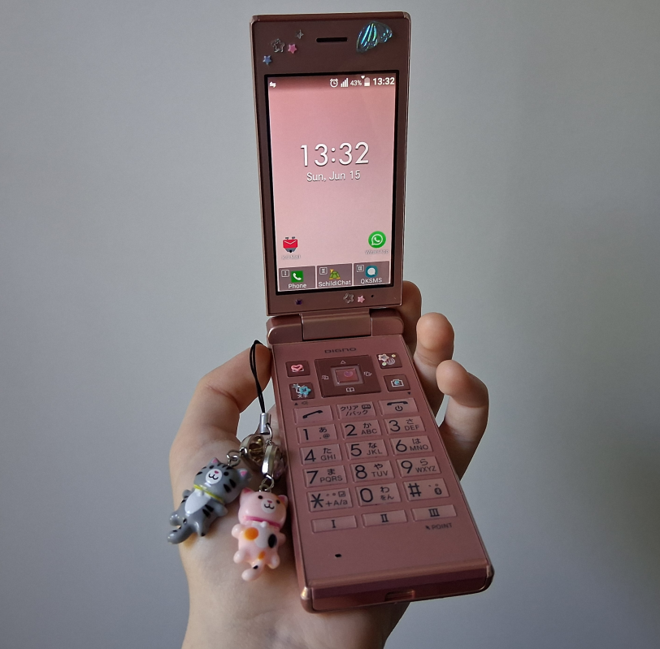
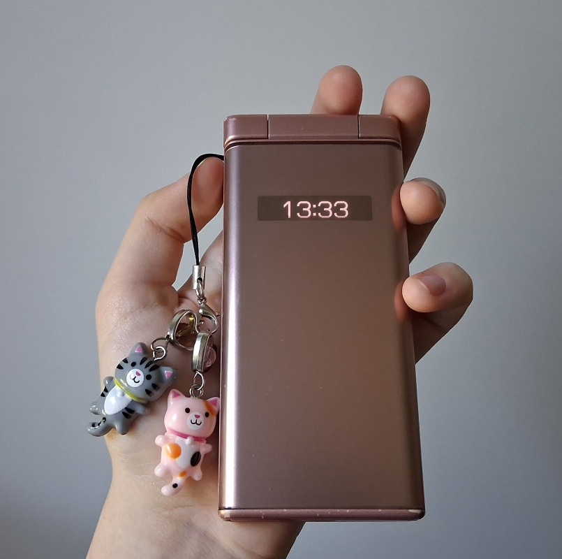

June 8, 2025
Is this yet another article about a young fledgling wanting to quit social media or pursuing minimalism?
It should go without saying that nearly everything you interact with on the internet is pushed upon you by some algorithm. In many cases it's straight up generated by artifical inteligence. Phones are the ideal devices for getting a dopamine hit from social media, since they're constantly in your pocket and they're accessible. That makes them really addictive, and very soon I discovered that I have no self control when it comes to technology.
I know it's cringe, I tried setting up mechanical timers which switched off my WiFi, I uninstalled web browsers from my smartphone, I deleted my accounts, however the fear of missing out or boredom always made me find a workaround to my solutions. No WiFi or mobile data? I ended up *redacted*, the determination to text people was so strong I was standing outside next to a fence while it was snowing, just to get that WPA handshake. I wish I had a stronger will. My autistic mind prevailed.
Then I thought of getting a custom ROM for my smartphone, I settled for LineageOS. Unfortunately even if I uninstalled the preinstalled web browser via ADB, it got installed back with the next software update. The only way of solving this issue would have been rooting my phone. And I was too scared to do that since I didn't want to brick my phone.
In my situation the goal was to use my thinkpad more than my phone, which I succeeded at doing. I got a second hand dumbphone from Ebay, a Kyocera 701kc. It's a classic japanese flip phone that comes with Android 5.1 and it lacks the Google API. I'd say it's a mix between a dumbphone and a smartphone, since this phone can still access the internet, although in a painful wacky way. It doesn't have a touchscreen, a headphone jack nor hotspot capabilities. At first I was a bit disappointed, but this turned out to be a blessing in disguise.
You see, now I get to look outside of a window if I'm in a commie train, unless I want to read a book. I can reply to messages if I get new ones, but that's about it. It feels peaceful, I enjoy those mornings. If I want to listen to music, I can because I have FLACs on my thinkpad.
Before getting a japanese phone I had to check if the bands in my country were compatible. Fortunately I get 4G and 3G signal in cities, so calling people isn't an issue. But the Android version is quite old, in order to not get hacked, I don't connect to public WiFis. And to make my situation even harder on myself, I only install apps through ADB, I don't use Fdroid or Aurora store. I was pleasantly surprised to find out that I can use Matrix on a phone such as this one, SchildiChat somehow works, not in a perfect way but it's good enough for me.
It's been over a month and I don't have a need to return to my smartphone. Everything I previously used on it still works on my dumbphone. The desire to use a phone isn't strong anymore. After all, typing 15 words per minute on a stylish japanese keyboard is fun, but not for hours upon hours. The battery life is passable, thankfully this phone uses Micro USB instead of USB C, therefore the charging port should last longer. On top of that, I can easily take out the battery, I missed that on modern smartphones.
These are the apps I use, the storage can be expanded to 32 GiB via a SD card on this model.
"Ewwww aren't you a free software extremist? You're such a hypocrite-" my violin teacher requires me to use it. And before you start yelling "make her switch to xyz", there is no way I'm forcing someone to make a drastic change when they're not tech savvy.
K-9 Mail
I keep forgetting to check emails on my computer, and I get mostly important emails anyway. It's more practical for me this way. The user interface is nice, it's not a problem to click on anything, however logging into my email account was tough. Typing a randomly generated password on a dumbphone keyboard is something which haunts me in my dreams.
QKSMS
The default messaging app was unusable, QKSMS has been great. It looks identical to modern SMS apps and I can comfortably use a cursor in it. In short, it's pretty neat.
Periodical
Self explanatory, but sadly I wasn't able to import the previous export I had, due to the app behaving in a different way on a dumbphone. I couldn't select an option for importing a file containing all the JSON information. I'll have to set this up manually.
Unnamed country specific app
I use it for buying bus tickets, it's a lot cheaper this way instead of getting a paper ticket.
Besides all of this, I can scan QR codes and Bar codes. It's especially useful when I need to transfer files between my phone and my computer, or vice versa. The program I use for doing that is called qrcp, otherwise I just use ADB. The camera isn't great, but it can capture decent pictures of my cat with a 2000's look to it. One thing which I find to be weird is the lack of physical volume buttons, these can be remapped through a T9 keyboard, I chose to not do that. There's also Bluetooth, an incredibly unsafe protocol that I avoid at all costs.
By the way, banking apps don't work on this phone either, but you shouldn't have them on your phone to begin with.
Overall I'm satisfied with this decision, there's a useful touch to the design of the phone itself – a small display on the top of the lid, I can check time, battery and other things on it while the phone is closed.
 